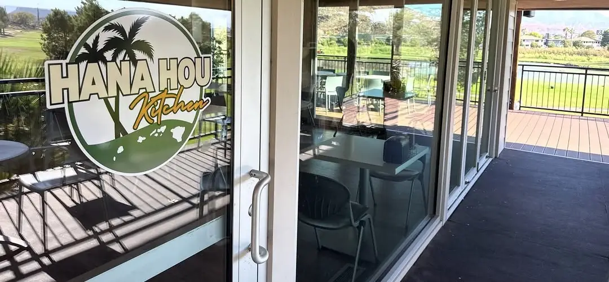

Hana Hou Kitchen at Southgate Golf Club is the second location of Joshua Lui's Hawaiian kitchen, serving Hawaiian plates and poke bowls with a view over the course. It is open every day from 9 to 4.
Hana Hou Kitchen (Southgate Golf Club) is located at 1975 S Tonaquint Dr, St. George, UT.
Yes, Hana Hou Kitchen (Southgate Golf Club) is a restaurants & food featured on My Aloha Map, a directory of Hawaiian, Pacific-Islander and Asian-American-owned businesses.
You can call (435) 627-4439.
Monday: 9 AM to 4 PM; Tuesday: 9 AM to 4 PM; Wednesday: 9 AM to 4 PM; Thursday: 9 AM to 4 PM; Friday: 9 AM to 4 PM; Saturday: 9 AM to 4 PM; Sunday: 9 AM to 4 PM.
We verify every business on My Aloha Map, and this one isn't verified yet. If you own it and something's wrong, you'd like to be removed, or you'd like to get verified, contact us here.
Claiming your listing is free. It starts with a 45-minute setup call with our team: we'll confirm it's your business, go through your listing together, get you verified and gather everything we need to build out your full listing.
Pick a time that works for you 👇
Trouble with the calendar? Open it in a new tab.